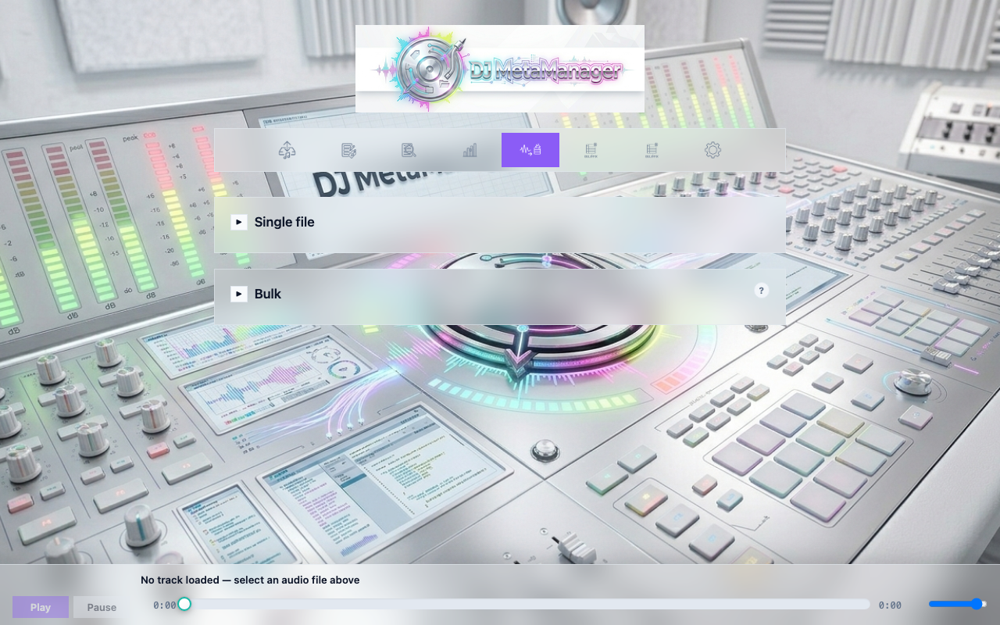
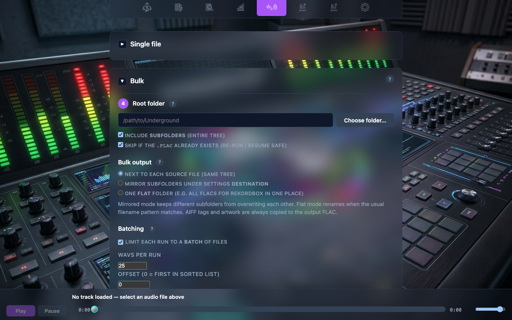

WAV → FLAC
Convert WAV masters or exports to FLAC using FFmpeg (high compression level). Source WAVs are never deleted. Tags can be embedded from filename patterns aligned with Fix Metadata and Bulk Fix (see Reference → Filename rules).
Single file
Browse a folder, pick one .wav, choose whether the FLAC is written next to the WAV or under your Settings destination, then convert.

15-wav-flac-single.png).Bulk conversion
Scan a root folder recursively (optional). Output modes:
- Next to each WAV —
.flacbeside each source. - Mirror under destination — preserve subfolders under your music root (reduces collisions when multiple BPM folders share structure).
- One flat folder — all FLACs into a single directory; filenames may follow
Slot - BPM - Artist - Titlewhen the WAV name matches DJ export conventions.
Batching and safety
Large trees should use offset and limit (e.g. 25 files per run) with skip if FLAC already exists for resumable jobs. The app can persist the next offset in the browser between runs. A strong in-page confirmation appears before very large unrestricted batches.

16-wav-flac-bulk-options.png).
17-wav-flac-confirm-modal.png).Handoff to Bulk Fix
After a successful flat-folder batch, the API returns batch_flac_paths: output paths in conversion order. Folder listings are often alphabetical by renamed file, which may not match your BPM-tree order. Open Bulk Fix passes a short-lived handoff so Bulk Fix can load exactly those paths via POST /api/bulk-fix/scan-paths.
18-wav-flac-open-bulk-fix.png).Continue to Bulk Fix for batch metadata.